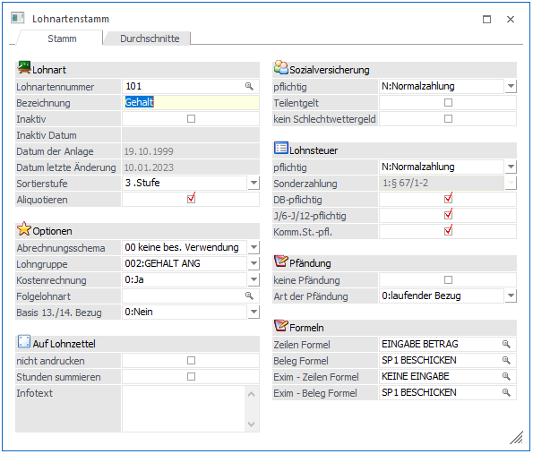
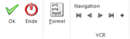

Die Lohnarten sind Bezüge und Abzüge, die im Zuge der Abrechnung erfasst und berechnet werden.
Die Lohnarten bestehen aus 2 Arbeitsbereichen:
ü Pflichtigkeiten für SV,
Lohnsteuer
Damit wird gesteuert, wie die Lohnart abrechnungstechnisch
behandelt wird.
ü Formel
Die Formel gibt an, wie
die Lohnart bei der Abrechnung abgearbeitet wird, z.B. durch Eingabe einer
Stundenanzahl und Abruf eines fixen Wertes aus dem Arbeitnehmerstamm.
Die Lohnarten werden im Programmpunkt
1 Stammdaten
1 Lohnarten
1 Lohnartenstamm
oder Schnellaufruf
1 STRG + L
aufgerufen.

Eingabefelder
Ø Lohnartennummer
Eingabe einer max. 20stelligen Nummer. Durch Drücken der F9-Taste kann nach einer bereits angelegten Lohnart gesucht werden.
Die Lohnartennummer ist 20stellig, alphanumerisch. Bei der Neuanlage von Lohnarten muss darauf geachtet werden, dass daher die Sortierung der Lohnarten linksbündig erfolgt:
Beispiel zur Sortierung:
|
numerisch |
alphanumerisch |
|
1 |
1 |
|
2 |
10 |
|
3 |
11 |
|
9 |
19 |
|
10 |
101 |
|
11 |
2 |
|
19 |
3 |
|
101 |
9 |
Soll eine numerisch-ähnliche Sortierung erfolgen, gibt es 2 Varianten, wie das realisiert werden kann:
ü Vorlaufnullen
Es werden
"Vorlaufnullen" verwendet - es wird dann z.B. statt der Nummer 1 die Nummer 0001
verwendet, statt 2 0002 usw.
ü Sortierstufe
Ø Bezeichnung
Eingabe einer max. 50-stelligen Bezeichnung der Lohnart. Bei einer Neuanlage der Lohnart wir hier der Text "NEUEINGABE - F9 für Übernahme" angezeigt. Das bedeutet, dass bei der Neuanlage einer Lohnart in diesem Feld durch Drücken der F9-Taste die Einstellungen einer bestehenden Lohnart übernommen werden können.
Ø Inaktiv
Durch Aktivieren dieser Checkbox wird die Lohnart deaktiviert und kann in Erfassungen nicht mehr verwendet werden. Unter der Checkbox wird das Datum, an dem die Lohnart deaktiviert wurde, angezeigt.
Diese Checkbox wird anstelle des Löschen-Button verwendet: Aufgrund der Möglichkeit, einen Lohnartenstamm für viele Mandanten zu verwalten, müssten alle Mandanten auf die Verwendung dieser Lohnart untersucht werden - da dies zu viel Zeit in Anspruch nehmen würde, kann eine Lohnart nur über den Reorg (siehe auch Kapitel Reorg) gelöscht werden.
Darunter wird das Datum der Anlage und das Datum der letzten Änderung der Lohnart angezeigt.
Ø Sortierstufe
Hier kann eingestellt werden, in welcher Sortierungshierarchie sich die Lohnart befindet. Es gibt neun Stufen, wobei bei der Erfassung zuerst nach der Stufe und erst im zweiten Schritt nach der Lohnart sortiert wird.
Beispiel:
Die Lohnarten sind mit Zahlen angelegt (z.B. 1, 2, 3, 4, … 9, 10, 11, 12, …. 99, 100, 101, 102, …). Damit nun in der Erfassung der Abrechnungszeilen die Zeilen in der richtigen Reihenfolge angezeigt bzw. behandelt werden (das hat auch mit den Abhängigkeiten der Lohnarten zu tun), kann folgende Einstellung getroffen werden:
Alle Lohnarten mit einer Stelle (1, 2, 3, 4, 5, … 9) bekommen die 1. Sortierstufe
Alle Lohnarten mit zwei Stellen (10, 11, 12, … 99) bekommen die 2. Sortierstufe
Alle Lohnarten mit drei Stellen (100, 101, 102, 103, … 999) bekommen die 3. Sortierstufe
Damit ist gewährleistet, dass die Lohnarten in der Abrechnung auch in der Zahlenreichenfolge (auch wenn es sich um eine alphanumerische Sortierung handelt) dargestellt werden.
Hinweis:
Die Funktion der Sortierung mittels Sortierstufe funktioniert nur in der Abrechnung.
Ø Aliquotieren
ü aktiv
Die Lohnart kann bei der
Abrechnung entsprechend der Abrechnungstage (SV-Tage) aliquotiert werden. Das
Kennzeichen Aliquotieren wird bei Lohnarten gesetzt, deren Abrechnungsbetrag bei
gebrochenen Abrechnungszeiträumen (z.B. Austritt während des Monats, Eintritt
während des Monats) korrigiert werden muss, z.B. Grundbezug.
ü inaktiv
Die Lohnart darf bei
der Abrechnung nicht aliquotiert werden z.B. Überstunden.
Hinweis:
Diese Option hat für die automatische Aliquotierung von Sonderzahlungen KEINE Auswirkung.
Optionen
Ø Abrechnungsschema
Das Abrechnungsschema steuert die unterschiedlichsten Arten der Berechnung von Sozialversicherungsbeiträgen und Lohnsteuer. Durch Auswahl des Abrechnungsschemas wird in weiterer Folge auch bestimmt, welche Eingabefelder bearbeitet werden dürfen und welche nicht.
Die Abrechnungsschemata im Überblick:
04 §16/1 (Gewerkschaftsbeitrag)
07 Unbezahlter Urlaub ( "Blautage" )
09 §16/2 (rückgez. Arbeitslohn)
15 Altersteilzeit: Lohnausgleich
20 Altersteilzeit: SV-Dienstgeberanteil
22 Hinzurechnungsbetrag zur BV-BMG
32 KUG Ausfalldifferenz (SV AN/DG)
33 KUG Ausfalldifferenz (SV DG/DG)
34 Steuerfreie Bezüge § 3 EStG.
35 RAK-Beiträge für Rechtsanwaltsanwärter
36 Steuerfreie Geldbezüge § 3
37 Auslandstätigkeit ab 2012 über 400km
38 § 3 Abs. 1 Z 11
39 § 3 Abs. 1 Z 16c
40 BUAK Urlaubsgeld Direktzahlung
41 BUAK Urlaubszuschuss Direktzahlung
42 BUAK Urlaubszuschuss 6%
43 BUAK sonstiger Bezug J/12
44 Urlaubsgeld (13. Bezug)
45 Weihnachtsgeld (14. Bezug)
46 Kündigungsentschädigung NZ
47 Kündigungsentschädigung SZ
48 KFZ Sachbezug
49 SEG §68/2 100% zu 50% begünstigt
50 Differenzbetrag - N67
51 SEG §68/2 70% zu 50% begünstigt
52 SEG §68/1 Überstunden
53§ 67 Abs. 10
54 Ersatzleistung NZ bei Todesfall
55 Bezüge 1/5 steuerfrei 4/5 pflichtig
56 Bemessung für N70/A15
57 Aushilfskräfte nach § 3 Abs. 1 Z 11 lit. a EstG
58 Pfändungsnetto aus anderem Dienstverhältnis
59 SEG §68/2 (erste 10 Üst.) 75% zu 50% begünstigt
60 KUG - geleistete Arbeitsstunden
61 KUG - Ausfallstunden Kurzarbeitsunterstützung
62 KUG - Krankstunden
63 KUG - Urlaubsstunden
64 KUG - Ersatzleistungsstunden
65 KUG - Überstunden
66 KUG - Feiertagsstunden
67 KUG - Weiterbildungszeiten
68 Home Office (Tage/Pauschale)
69 Kostenübernahme (§ 26 Z 5 lit. b)
70 KUG - konsum. Zeitguthaben/sonst. Dienstverhinderung
71 mBGM - Tarifblock o. Verrechnung (frei DN)
72 Mitarbeitergewinnbeteiligung (§ 3 Abs. 1.Z. 35 EstG)
73 Firmenfahrrad
74 Teuerungsprämie (§ 124b Z. 408 EstG)
75 Teuerungsprämie (§68 Abs. 5 Z. 1 bis 7 EstG)
76 SEG §68/2 (erste 10 Üst.)
77 AG-Beiträge an ausl. PV (§ 27 Z 7)
Ø 0 keine Besondere Verwendung
Diese Abrechnungsschema wird dann verwendet, wenn es sich um einen "normalen" Bezug handelt. Das Abrechnungsschema 0 steuert:
ü Die SV und LST wird gemäß den Einstellungen berechnet.
ü Die Lohnart wird in den Bruttobezug eingerechnet.
ü Die damit abgerechneten Bezüge werden am L16 in der Position 210 ausgewiesen.
SEG-Zulagen § 68/1 sind bis zu € 360,- bzw. € 540,- steuerfrei. Diese Beträge müssen im L16 (Lohnzettel) getrennt ausgewiesen werden. Das Abrechnungsschema 1 steuert:
ü Abprüfung der Grenze von € 360,- bzw. € 540,-. Übersteigende Beträge werden der normalen Tarifbesteuerung (Progression) unterworfen.
ü Getrennte Ausweisung der Beträge auf dem L16 - Formular (Lohnzettel)
ü Ausweisung der lt. § 68/1 steuerfreien Beträge im Jahreslohnkonto unter Schema 1.
Achtung:
Die erhöhte SEG-Grenze von € 540,- wird im Arbeitnehmerstamm durch Aktivieren der Checkbox "Erhöhtes SEG" im Arbeitnehmerstamm - Register Lst hinterlegt.
Lohnarten mit Abrechnungsschema 1 werden ohne Lohnsteuerpflichtigkeit angelegt. Die Berechnung der Lohnsteuer wird durch das Abrechnungsschema gesteuert.
Ø 2 SEG §68/2 (ersten 10 Üst.)
Gemäß § 68/2 EStG sind Zuschläge für die ersten 10 Überstunden im Monat im Ausmaß von höchstens 50 % des Überstundengrundlohnes max. aber € 86,- steuerfrei. Das Abrechnungsschema 2
ü summiert die Anzahl der lt. § 68/2 begünstigten Überstundenzuschläge in das im L16 vorgesehenen Feld.
ü bewirkt, dass am Jahreslohnkonto der Überhang der lt. § 68/2 begünstigten Überstunden ausgewiesen wird. Dieser Überhang wird der normalen Progression unterworfen.
Hinweis
Lohnarten mit Abrechnungsschema 2 werden ohne Lohnsteuerpflichtigkeit angelegt. Die Lohnsteuerberechnung wird durch das Abrechnungsschema gesteuert.
Die Prüfung auf 10 Überstunden bzw. auf die € 86,- kann in speziellen Fällen automatisch durch das Abrechnungsschema erfolgen. Dabei müssen folgende Voraussetzungen beachtet werden:
ü Alle unter § 68/2 fallende Überstunden müssen als Satzbeträge eingegeben werden, d.h. bei der Abrechnung muss die Anzahl der Überstunden als Multiplikationsfaktor eingetragen werden (die Eingabe der Stundenzahl ist die Voraussetzung für die Prüfung auf 10 Überstunden).
ü Werden Überstundenzuschläge nur betragsmäßig erfasst (z.B. Pauschbetrag), muss die Prüfung lt. § 68/2 manuell vorgenommen werden.
Das Abrechnungsschema 3 steuert, dass das Jahressechstel in Zusammenhang mit Ersatzleistungen richtig gerechnet wird.
Bei der Auszahlung von Ersatzleistungen (Urlaubsentschädigung, Urlaubsabfindung etc.) muss - wenn der AN während des Monats austritt - das J/6 anders berechnet werden (nach der Formel "Summe der J/6-pflichtigen Bezüge" durch "Anzahl gearbeiteter Tage" * 60). Ausgenommen von dieser Regelung sind die Ersatzleistungen NZ - hier muss 1/6 der laufenden Bezüge zum J/6 hinzugerechnet werden.
Wenn das Abrechnungsschema 3 eingetragen wird, wird die SV- und Lohnsteuer - Pflichtigkeit automatisch auf Normalzahlung gestellt und kann nicht verändert werden.
Bezüge, die mit dem Abrechnungsschema 3 abgerechnet werden, werden am Jahreslohnkonto extra ausgewiesen.
Ø 4 § 16/1 - Gewerkschaftsbeitrag
Die Lohnarten "Gewerkschaftsbeiträge" müssen an einer speziellen Position im L16-Formular ausgewiesen werden.
Die Basis für die Berechnung des Gewerkschaftsbeitrags sowie der Prozentsatz für die Ermittlung der Höhe des Abzuges sollte in der mit der Lohnart verbundenen Formel hinterlegt werden.
Das Abrechnungsschema 4 steuert, dass
ü der Betrag die BMG-LST Normalzahlung senkt.
ü die Abzüge lt. Par. 16/1 von dem Nettoauszahlungsbetrag abgezogen werden und
ü in der im L16 vorgesehenen Zeile ausgewiesen werden und
ü am Jahreslohnkonto im Feld BMG Schema 4 ausgewiesen werden.
Gewerkschaftsbeiträge werden bei der Abrechnung mit positiven Beträgen eingetragen. Das Abrechnungsschema 4 behandelt sie automatisch als Abzug, d.h. der Betrag wird vor der Ermittlung des Nettobezuges abgezogen.
Ø 5 Abzug
Mit dem Abrechnungsschema 5 werden Lohnarten abgerechnet, die als Aconto ausbezahlt werden, wobei hier einfach der eingegebene Betrag vom Netto abgezogen wird.
Ist eine Pfändung vorhanden, wird zuerst der Pfändungsbetrag ermittelt, erst danach wird das Aconto in Abzug gebracht.
Der Abzug wird am Jahreslohnkonto im Feld BMG Schema 5 ausgewiesen.
Hinweis:
Für auszuzahlende Aconti (z.B. Firmenkredite, die auch nicht sofort wieder einbehalten werden) kann das Abrechnungsschema " 24 Hinzurechnung" verwendet werden.
Sachbezüge dienen der Erhöhung der Bemessungsgrundlage für die Berechnung der Lohnsteuer / bzw. der Sozialversicherung.
Achtung:
Für KFZ-Sachbezüge gibt es ein eigenes Abrechnungsschema "48 KFZ-Sachbezug"
Ø LST N
Ist die Pflichtigkeit für Lohnsteuer in der Lohnart auf N (Normalzahlung) gesetzt, bewirkt das Abrechnungsschema eine Erhöhung der Bemessungsgrundlage der Lohnsteuer, z.B. Firmen-PKW für private Nutzung, etc.
Ø SV N
Ist die Pflichtigkeit für Sozialversicherung in der Lohnart auf N (Normalzahlung) gesetzt, bewirkt das Abrechnungsschema eine Erhöhung der Bemessungsgrundlage der Sozialversicherung.
Das Abrechnungsschema 6 bewirkt
ü die Erhöhung der Bemessungsgrundlage (Lohnsteuer und/bzw. SV).
ü keine Veränderung des Bruttobetrages.
ü Abzug des Sachbezuges vor Ermittlung des Nettobetrages.
ü Der Sachbezug wird am Jahreslohnkonto im Feld BMG Schema 6 ausgewiesen.
ü Wenn die Summe der SV-Beiträge (exkl. Nebenbeiträge wie KU, WF) 20 % der Geldbezüge übersteigt, dann wird der übersteigende Betrag der SV-Beiträge (exkl. Nebenbeiträge wie KU, WF) den Dienstgeberkosten zugeordnet (Sachbezugsregel).
ü Für den vom DG übernommenen Teil (Sachbezugsregel) wird am Jahreslohnkonto auch eine eigene Position gefüllt (SV-AN Anteil vom DG übernommen).
Das Abrechnungsschema 7 wird für die Abrechnung von unbezahltem Urlaub bzw. Blautagen herangezogen. Es bewirkt,
dass der Dienstgeberanteil zur Sozialversicherung dem Arbeitnehmer angelastet wird.
dass der Betrag am Jahreslohnkonto im Feld BMG Schema 7 ausgewiesen wird.
Achtung:
Bei Blautagen zahlt der Arbeitnehmer den gesamten SV-Beitrag. Ausgenommen davon sind die Beiträge für IE und NB (übernimmt der Dienstgeber) und sonstige Nebenbeträge wie KU und WF (entfallen bei unbezahltem Urlaub).
Lohnarten mit Abrechnungsschema 8 unterliegen automatisch der A13-Automatik. Der Bezug, der unter Schema 8 abgerechnet wird, ist 60 % des Normalbezuges. Die Differenz, das sind 40 %, werden nach A13 abgerechnet, sofern noch Platz in der Bemessung A1 gegeben ist.
Die Bezüge mit Schema 8 werden üblicherweise nach der Sozialversicherungspflichtigkeit A1 abgerechnet.
Beispiel:
Ein Arbeiter würde im Monat normalerweise € 2.000,-- verdienen. Aufgrund von Schlechtwetter konnte er aber nur 15 Tage arbeiten.
Normalbezug: € 1.000,--
Schlechtwetter-Entschädigung: € 600,-- daher werden € 1.600,-- unter Pflichtigkeit A1 abgerechnet, die nachgerechneten 40 % - das sind € 400,-- werden nach A13 ab- gerechnet.
Für den Betrag der in die A13-Automatik fällt, ist der Dienstgeberanteil, nicht jedoch ein Dienstnehmeranteil zu entrichten. Der Betrag scheint daher am Abrechnungsbeleg nicht auf. Er wird auf dem Sozialversicherungsbeleg und auf dem Lohnkonto des Arbeitnehmers ausgewiesen. Außerdem scheint er am Jahreslohnkonto im Feld BMG Schema 8 auf.
Ø 9 § 16/2 Rückgezahlter Arbeitslohn
Lohnarten, die die Rückzahlung von Arbeitslohn beinhalten (z.B. Provisions-Rückzahlungen) werden mit dem Abrechnungsschema 9 gekennzeichnet.
Das Abrechnungsschema 9 steuert, dass
ü rückgezahlter Arbeitslohn auf dem Formular L16 getrennt von anderen Bezügen ausgewiesen wird.
ü am Jahreslohnkonto im Feld BMG Schema 9 ausgewiesen wird.
Ø 10 § 26
Leistungen des Arbeitgebers, die nicht unter die Einkünfte aus nicht selbständiger Arbeit fallen, werden mit dem Abrechnungsschema 10 gekennzeichnet.
Beispiele:
Beträge, die für die Aus- und Weiterbildung des Arbeitnehmers aufgewendet werden, Reisevergütungen etc.
Das Abrechnungsschema 10 steuert, dass die Beträge
ü in der im L16 vorgesehenen Zeile ausgewiesen werden.
ü am Jahreslohnkonto im Feld BMG Schema 10 ausgewiesen werden.
Einkünften aus nicht selbständiger Arbeit wie z.B.
ü Bezüge aus einer gesetzlichen Kranken- bzw. Unfallvorsorge
ü Krankengelder aus Versorgungs- und Unterstützungseinrichtungen der Kammer etc.
wird das Abrechnungsschema 11 zugeordnet.
Das Abrechnungsschema 11 bewirkt, dass die Bezüge
ü in der im L16 vorgesehenen Zeile ausgewiesen werden.
ü am Jahreslohnkonto im Feld BMG Schema 11 ausgewiesen werden.
Sonderbezüge sind Auszahlungen, die nicht am L16 ausgewiesen werden.
Diese Sonderbezüge werden am Jahreslohnkonto unter BMG Schema 12 ausgewiesen.
Ø 13 Korrektur LST-Normalzahlung
Mit dem Abrechnungsschema 13 kann eine manuelle Korrektur der Lohnsteuer vorgenommen werden.
Ø 14 Korrektur LST-Sonderzahlung
Mit diesem Abrechnungsschema können Korrekturen der LST-SZ vorgenommen werden.
Ø 15 Altersteilzeit: Lohnausgleich
Dieses Abrechnungsschema hat derzeit nur die Funktion, dass die abgerechneten Bezüge im Jahreslohnkonto gesondert ausgewiesen werden.
Dieses Abrechnungsschema hat derzeit keine Funktion.
Das Abrechnungsschema 17 steuert,
ü dass die Lohnsteuerbemessungsgrundlage Normalzahlung verändert wird. Wird der Betrag ohne Vorzeichen eingegeben, wird die BMG vermindert, wird der Betrag mit negativem Vorzeichen eingegeben, wird die BMG erhöht.
ü dass die erfassten Beträge am Jahreslohnkonto gesondert ausgewiesen werden.
Ø 19 § 77 - Einschleifregelung
§ 77 besagt: Übersteigen die sonstigen Bezüge innerhalb des Jahressechstels gemäß § 67 Abs. 1 und 2 EStG die Freigrenze von € 2.100,-- (ab 1.1.2009) beträgt die Steuer unter Anwendung des § 67 Abs. 12 EStG (d.h. nach Abzug der darauf entfallenden SV-Beiträge) 6 % des € 620,-- übersteigenden Betrages, jedoch höchstens 30 % des € 2.000,-- übersteigenden Betrages abzüglich der darauf entfallenen SV. D.h. Der in § 77 Abs. 4 EStG angeführte Betrag von € 2.000,-- inkludiert nicht die darauf entfallende Sozialversicherung.
Das Abrechnungsschema 19 führt diese Berechnung durch. Dieser § darf nur bei der letzten Sonderzahlung im Jahr und nur dann angewandt werden, wenn der Arbeitnehmer das gesamte Jahr über beschäftigt war.
Das Abrechnungsschema 19 sollte daher nur der Lohnart, mit der die letzte Sonderzahlung im Jahr (Weihnachtsgeld) berechnet wird, verwendet werden.
Ø 20 Altersteilzeit: SV-Dienstgeberanteil
Bei einer Abrechnung mit Altersteilzeit wird ein Teil des Bezuges (den der AN nicht bekommt) zur Berechnung der SV und der sonstigen Beiträge und Umlagen verwendet. Damit dieser Teil richtig abgerechnet wird, muss das Abrechnungsschema 20 verwendet werden.
Das Abrechnungsschema 20 steuert
ü dass der mit diesem Abrechnungsschema abgerechnete Betrag SV-mäßig richtig berechnet wird. Dazu wird der anteilige Betrag auch zur DB-, DZ- und KommSt-Bemessungsgrundlage gerechnet, wenn die Checkboxen DB und KommSt aktiviert wären (gilt auch für die Checkbox J/6).
ü dass die Bezüge, die mit diesem Abrechnungsschema abgerechnet werden, werden am Jahreslohnkonto gesondert ausgewiesen.
Ø 21 INFO Lohnart - Keine Abrechnungstechnische Auswirkung
Dieses Abrechnungsschema bewirkt, dass der Betrag, der mit dieser Lohnart abgerechnet wird, nur als Durchläufer verwendet wird. D.h. die Lohnart kann zwar am Abrechnungsbeleg angedruckt werden, der Betrag wird aber weder in das Brutto, noch die BMG SV oder LST gerechnet und wird auch beim Netto nicht berücksichtigt.
Anwendungsbeispiele dafür wären:
Überstundenpauschale
Normalerweise werden Überstunden mit den Lohnarten "Überstundengrundbezug" und "Überstundenzuschläge 50 %" abgerechnet. Um das in eine einzige Zeile "Überstundenpauschale" in der Abrechnung (beim Ausdruck des Abrechnungsbeleges) zu verpacken, muss nur eine Info-Lohnart (mit Abrechnungsschema 21) über den gesamten Betrag eingeführt werden (diese Lohnart kann z.B. auf eine AN-Konstante zugreifen, in der die Pauschale verspeichert ist), die beiden Lohnarten für "Überstundengrundbezug" und "Überstundenzuschläge 50 %" müssen trotzdem vorhanden sein (damit die Abprüfung der ersten 5 Überstunden gewährleistet wird), können aber mit der Option "nicht andrucken" versehen werden.
In der Erfassung der Abrechnung sind demnach für die Überstunden 3 Lohnarten vorhanden, beim Ausdruck aber wird nur die Lohnart mit der Überstundenpauschale angedruckt.
Ø 22 Hinzurechnungsbetrag zur BV-Bemessung
Für bestimmte entgeltfreie Zeiträume muss der Arbeitgeber die Abfertigungsbeiträge weiter zahlen, wenn das Arbeitsverhältnis weiter besteht. Es handelt sich dabei um folgende Tatbestände:
Präsenz-, Ausbildungs- oder Zivildienst
Für die Dauer des Präsenzdienstes ist bei arbeitsrechtlich aufrechtem Arbeitsverhältnis der Arbeitgeber verpflichtet, einen Abfertigungsbeitrag in der Höhe von 1,53 % einer fiktiven Bemessungsgrundlage zu entrichten. Diese fiktive Bemessungsgrundlage ist der Betrag des Kinderbetreuungsgeldes (täglich € 14,53).
Erhält der Arbeitnehmer vom Arbeitgeber weiterhin ein Entgelt (auch geringfügig), ist hievon (zusätzlich zur fiktiven Bemessungsgrundlage) ebenfalls ein Beitrag zu zahlen.
Diese Regelung gilt entsprechend für die Zeit eines Zivildienstes, für einen Wehrdienst als Zeitsoldat (Beiträge für eine Dauer bis zwölf Monate) sowie einen Ausbildungsdienst für Frauen.
Wochen- oder Krankengeld
Für die Dauer eines Anspruches auf Wochen- oder Krankengeld nach dem ASVG hat der Arbeitgeber bei arbeitsrechtlich aufrechtem Arbeitsverhältnis einen Abfertigungsbeitrag in Höhe von 1,53 % einer fiktiven Bemessungsgrundlage zu entrichten. Die fiktive Bemessungsgrundlage ist im Falle des Wochengeldbezuges das für den Kalendermonat vor dem Eintritt des Versicherungsfalles gebührende Entgelt. Im Falle des Krankengeldbezuges sind dies 50 % dieses Entgelts.
Erfolgt eine 50 %-ige Entgeltfortzahlung durch den Arbeitgeber neben dem Krankengeldbezug, ist die fiktive Bemessungsgrundlage in diesem Fall 100 % des vorherigen Entgelts (wie beim Wochengeld). Die fiktive Bemessungsgrundlage setzt sich in diesem Fall aus der 50 %-igen Entgeltfortzahlung sowie der fiktiven 50 %-igen Bemessungsgrundlage für den Bezug des Krankengeldes zusammen.
Wird das Arbeitsverhältnis während der Arbeitsunfähigkeit beendet, ist ab diesem Zeitpunkt Beitragsgrundlage nur mehr das fortgezahlte Entgelt (keine zusätzliche fiktive Bemessungsgrundlage).
Erhält der Arbeitnehmer volles Krankengeld und zusätzlich vom Arbeitgeber eine Entgeltfortzahlung zum Beispiel in der Höhe von 25 %, ist vom fortgezahlten Entgelt kein Abfertigungsbeitrag zu zahlen (auch sv-frei); Beitragsgrundlage ist nur die fiktive 50 %-ige Bemessungsgrundlage.
Das Teilentgelt bei Lehrlingen erhöht die fiktive 50 %-ige Bemessungsgrundlage nicht.
Wird das Abrechnungsschema 22 in der Lohnart verwendet, so kann weder eine SV- noch eine LST- Pflichtigkeit gesetzt werden. Das Abrechnungsschema 22 steuert, dass der damit abgerechnete Betrag die Bemessungsgrundlage und somit auch den Beitrag der BV erhöht.
Ø 23 Abzug (vor Pfändungsberechnung)
Mit diesem Abrechnungsschema werden Lohnarten abgerechnet, die zwar das Netto vermindern, aber auch bei allfälligen Pfändungen mit berücksichtigt werden. D.h. die mit Abrechnungsschema 23 abgerechneten Lohnarten werden gemeinsam mit der SV und LST vom pfändbaren Betrag abgezogen. Ein Beispiel für die Verwendung des Abrechnungsschemas ist die Betriebsratsumlage.
Lohnarten, die mit dem Abrechnungsschema 23 abgerechnet werden, werden auch gesondert am Jahreslohnkonto ausgewiesen.
Mit dem Abrechnungsschema 24 werden Lohnarten abgerechnet, die den Netto-Auszahlungsbetrag erhöhen, und nicht gleich wieder abgezogen werden. Die Beträge werden ohne Vorzeichen erfasst.
Lohnarten, die mit dem Abrechnungsschema 24 abgerechnet werden, werden auch gesondert am Jahreslohnkonto ausgewiesen.
Ø 25 Zukunftss. § 3 Abs. 1 Z. 15 (über KV)
Mit diesem Abrechnungsschema werden Bezüge gemäß § 3 Abs 1 Ziffer 15 (Zukunftssicherung) abgerechnet, sofern der verbleibende Bezug über KV liegt.
Bezüge mit Abrechnungsschema 25 werden wie Sachbezüge abgerechnet, d.h. die Bezüge werden in das Brutto eingerechnet. Diese Bezüge werden auch am L16 in der Position "Sonstige steuerfreie Bezüge" ausgewiesen, am Jahreslohnkonto können diese Bezüge auch extra angedruckt werden.
Ø 26 Zukunftss. § 3 Abs. 1 Z. 15 (unter KV)
Mit diesem Abrechnungsschema werden Bezüge gemäß § 3 Abs 1 Ziffer 15 (Zukunftssicherung) abgerechnet, wenn durch die Minderung auch der KV unterschritten wird. Dabei ist zu beachten, dass mit dem Abrechnungsschema 26 nur der Betrag bis zum KV abgerechnet werden darf.
Für den Betrag bis zum KV muss der DG den Sozialversicherungsanteil DN übernehmen, wobei dieser Beitrag auch die BMG DB, DZ und KommSt. erhöht.
Bezüge mit Abrechnungsschema 26 werden in das Brutto eingerechnet. Diese Bezüge werden auch am L16 in der Position "Sonstige steuerfreie Bezüge" ausgewiesen, und am Jahreslohnkonto können diese Bezüge extra angedruckt werden.
Ø 27 Ust für freie Dienstnehmer
Mit diesem Abrechnungsschema kann eine an einen freien Dienstnehmer (Werksvertrag) ausgezahlte Umsatzsteuer abgerechnet werden. Bei einer Lohnart, die mit Abrechnungsschema 27 angelegt wird, können keine Pflichtigkeiten für SV und Lohnsteuer hinterlegt werden. Das Abrechnungsschema steuert,
ü dass der abgerechnete Betrag im Netto-Auszahlungsbetrag berücksichtigt wird.
ü dass der abgerechnete Betrag am Formular E18 an der richtigen Position ausgewiesen wird.
ü Dass der abgerechnete Betrag am Jahreslohnkonto in einer eigenen Rubrik ausgewiesen wird.
Mit diesem Abrechnungsschema werden Sonderzahlungen für Ersatzleistungen gekennzeichnet. Damit kann dann der Sonderzahlungsanteil der Ersatzleistung berechnet werden, wenn die Ersatzleistung über das Monat hinausgeht und entsprechend anteilsmäßig berücksichtigt werden muss. Wenn das Abrechnungsschema 28 eingetragen wird, wird die SV- und Lohnsteuer - Pflichtigkeit automatisch auf Sonderzahlung gestellt und können nicht mehr geändert werden. Zusätzlich dazu wird bei der Lohnsteuer die Option "§ 67 ½" eingestellt.
Bezüge, die mit dem Abrechnungsschema 28 abgerechnet werden, werden am Jahreslohnkonto extra ausgewiesen.
Mit diesem Abrechnungsschema werden Auslandsbezüge abgerechnet. Dadurch wird der Bezug auf den steuerpflichtigen und steuerfreien Bezug gesplittet und die Bezüge werden am L16 in der dafür vorgesehenen Position ausgewiesen.
Damit die Auslandstätigkeit in der WinLine korrekt abgerechnet werden kann, müssen folgende Punkte beachtet/überprüft werden:
Alle Lohnarten müssen so angelegt werden, als wären sie "Inlandsbezüge" D.h auch z.B. Überstundengrundbezüge, Sachbezüge oder sonstie Lohnarten müssen überprüft und entsprechend angelegt werden (mit dem jeweils richtigen Abrechnungsschema bzw. mit der Lohnsteuerpflichtigkeit). Nur der "Grundbezug" muss mit dem Abrechnungsschema "29 Auslandstätigkeit" angelegt werden, wobei auch hier die Lohnsteuerpflichtigkeit auf Normalzahlung zu setzten ist.
Die Berechnung der Lohnsteuer wird auch in der Rollung entsprechend berücksichtigt.
Hinweis:
Bis 31. Dezember waren die Bezüge bei begünstigten Auslandstätigkeiten steuerfrei. Dies wurde nun per Verfassungsgerichtshof wegen Verfassungswidrigkeiten aufgehoben.
Für die Jahre 2011 und 2012 gibt es allerdings eine Übergangslösung, die wie folgt aussieht:
Im Jahr 2011 sind vom errechneten Lohnsteuerbetrag 66% steuerfrei.
Im Jahr 2012 sind vom errechneten Lohnsteuerbetrag 33% steuerfrei.
Diese Regelung gilt auch für Sonderzahlungen die für die Zeit der Auslandstätigkeit ausbezahlt werden.
Die Bemessungsgrundlagen für DB, DZ sowie KommSt werden reduziert.
Bei Abrechnung von Auslandstätigkeit müssen die SEG Zulagen entsprechend aliquotiert werden.
Wenn steuerfreie Auslandsbezüge gemeinsam mit "normalen" Bezügen abzurechnen sind, dann ist die Anlage eines SUB-AN zu empfehlen, damit die L16 getrennt ausgewertet werden können.
Bezüge, die mit dem Abrechnungsschema 29 abgerechnet werden, werden am Jahreslohnkonto extra ausgewiesen.
Hinweis:
Bei der Auslandstätigkeit kann die Lohnsteuer nur mehr bedingt anhand der Lohnsteuertabelle nachgerechnet werden, weil zuerst die Lohnsteuer anhand der gegebenen Parameter ermittelt wird und davon dann für 2011 die 66% herausgerechnet werden.
Mit diesem Abrechnungsschema kann eine Bezugsumwandlung abgerechnet. Dabei werden folgende Punkte durchgeführt:
ü Wenn das Abrechnungsschema eingetragen wird, dann wird die Lohnart automatisch auf "SV Normalzahlung" und Lohnsteuerfrei gesetzt.
ü Zusätzlich muss die Lohnart auf DB-, J/6- und KommSt.-Pflichtig gesetzt werden.
ü Bei der Abrechnung dieses Abrechnungsschemas übernimmt der Arbeitgeber die komplette SV. Der Bezug wird aber zum Brutto hinzugerechnet und beim Netto wieder abgezogen.
ü Bezüge, die mit dem Abrechnungsschema 31 abgerechnet werden, werden am Jahreslohnkonto extra ausgewiesen.
ü Bezüge, die mit dem Abrechnungsschema 31 abgerechnet werden, werden am L16 im Punkt "Sonstige steuerfreie Bezüge" ausgewiesen
Mit diesem Abrechnungsschema können Werte erfasst werden, die bei der Abrechnung von Kurzarbeit als "Ausfallsdifferenz" bezeichnet wird, wobei die SV normal von Arbeitnehmer und Dienstgeber berechnet werden. Das ist die Differenz zwischen dem aktuellen Normalbezug, dem Zuschuss von AMS und dem letzten vollen Bezug vor Beginn der Kurzarbeit. Dieser Wert muss auch in die Bemessungsgrundlage zu Berechnung der SV mit einbezogen werden. Das Abrechnungsschema steuert:
ü dass der Bezug in die Bemessungsgrundlage SV (allerdings ohne den Nebenbetrag SW) gerechnet wird.
ü Dass bei der Abrechnung auf die 20%-Regel geprüft wird (der AN darf nicht mehr als 20 % seines Geldbezuges an SV abführen).
ü dass die für den Wert errechnete SV Beiträge auch entsprechend abgezogen werden
ü dass der Wert, der mit dem Abrechnungsschema 32 abgerechnet wurde auch am Jahreslohnkonto bzw. am Betriebssummenblatt aufscheint.
Ø 33 KUG Ausfalldifferenz (SV DG/DG)
Mit diesem Abrechnungsschema können Werte erfasst werden, die bei der Abrechnung von Kurzarbeit als "Ausfallsdifferenz" bezeichnet wird, wobei die SV nur vom Dienstgeber abgeführt wird. Das ist die Differenz zwischen dem aktuellen Normalbezug, dem Zuschuss von AMS und dem letzten vollen Bezug vor Beginn der Kurzarbeit. Dieser Wert muss auch in die Bemessungsgrundlage zu Berechnung der SV mit einbezogen werden. Das Abrechnungsschema steuert:
ü dass der Bezug in die Bemessungsgrundlage SV (allerdings ohne den Nebenbetrag SW) gerechnet wird.
ü dass bei der Abrechnung auf die 20%-Regel geprüft wird (der AN darf nicht mehr als 20 % seines Geldbezuges an SV abführen).
ü dass die für den Wert errechnete SV Beiträge auch entsprechend abgezogen werden
ü dass der Wert, der mit dem Abrechnungsschema 33 abgerechnet wurde auch am Jahreslohnkonto bzw. am Betriebssummenblatt aufscheint.
Ø 34 Steuerfreie Bezüge § 3 EStG.
Mit diesem Abrechnungsschema können Steuerfreie Bezüge gemäß § 3 EstG (wie z.B. Essenmarken oder dergleichen) abgerechnet werden. Das Abrechnungsschema 34 steuert:
ü dass der Bezug steuerfrei abgerechnet wird
ü dass der Bezug in das Brutto eingerechnet wird
ü dass der Bezug am L16 in der dafür vorgesehenen Position ausgewiesen wird
ü dass der Bezug am Jahreslohnkonto und in den Betriebssummen als "Steuerfreie Bezüge § 3 EStG." ausgewiesen wird.
Ø 35 RAK-Beiträge für Rechtsanwaltsanwärter
Mit dem Abrechnungsschema 35 können die Pflichtbeiträge zur Versorgungseinrichtung für Rechtsanwaltsanwärter abgerechnet werden. Das Abrechnungsschema steuert:
ü dass der Bezug zur BMG SV NZ hinzugerechnet wird
ü dass der Bezug zum Brutto hinzugerechnet wird
ü dass der Bezug von der LST BMG NZ abgezogen wird
ü dass der Bezug beim Lohnzettel in der Position 230 mitberücksichtigt wird
Hinweis:
Bei der Abrechnung der Pflichtbeiträge zur Versorgungseinrichtung gibt es zwei unterschiedliche Varianten:
1.) Der AN kommt selbst für den Pflichtbeitrag auf. In diesem Fall muss der Bezug des AN auf 2 Lohnarten aufgeteilt werden: in den Grundbezug abzüglich dem Pflichtbeitrag, und den Pflichtbeitrag selbst, der dann mit einer Lohnart mit dem Abrechnungsschema 35 abgerechnet wird. Dabei wird dann der Pflichtbeitrag von der BMG LST NZ abgezogen und vermindert auch den Nettobezug.
2.) Der Dienstgeber übernimmt die Pflichtbeiträge. In diesem Fall bleibt der Grundbezug gleich, und der Pflichtbeitrag wird mit dem Abrechnungsschema 35 abgerechnet, wobei der Pflichtbeitrag die BMG SV NZ erhöht. Dazu wird der Betrag aber von der BMG LST NZ wieder abgezogen.
Ø 36 Steuerfreie Geldbezüge § 3
Mit dem Abrechnungsschema 36 können Steuerfreie Geldbezüge nach § 3 abgerechnet werden, die auch Ausgezahlt werden. Wird eine Lohnart mit diesem Abrechnungsschema abgerechnet, so werden diese Bezüge zum Brutto gerechnet und vom Netto nicht abgezogen. Am Lohnzettel werden diese Bezüge in der Position "Sonstige freie Bezüge" angedruckt.
Ø 37 Auslandstätigkeit ab 2012 über 400km
Mit dem Abrechnungsschema 37 können Auslandstätigkeiten mit einer Entfernung über 400km abgerechnet werden. Dieses Abrechnungsschema steuert, dass 60% der Bezüge lohnsteuerfrei behandelt werden, unter der Berücksichtigung der SV Höchstbemessungsgrundlage.
Hinweis:
Die Begünstigung von 60% lohnsteuerfrei darf nur dann berücksichtigt werden, wenn keine sonstigen Begünstigungen wie zum Beispiel SEG Zulagen oder begünstigte Überstunden abgerechnet werden. Sobald eine weitere Lohnart in der Abrechnung mit begünstigter Lohnsteuer vorkommt, wird die 60%ige Lohnsteuerbefreiung nicht berücksichtigt.
Ø 38 § 3 Abs. 1 Z 11
Mit diesem Abrechnungsschema können Bezüge nach § 3 Abs. 1 Z 11 (Entwicklungshelfer/innen) abgerechnet werden. Diese werden steuerfrei behandelt und werden am L16 in der entsprechenden Position ausgewiesen
Ø 39 § 3 Abs. 1 Z 16c
Mit diesem Abrechnungsschema können Bezüge nach § 3 Abs. 1 Z 16c abgerechnet werden. Diese werden steuerfrei behandelt und werden am L16 in der entsprechenden Position ausgewiesen
Ø 40 BUAK Urlaubsgeld Direktzahlung
Erfolgt die BUAK Zahlung per Direktzahlung, so muss die Lohnart zur Abrechnung des Urlaubsgelds diese Abrechnungsschema hinterlegt haben. Dieses Abrechnungsschema steuert, dass die Werte entsprechend gemeldet werden können. Das Abgerechnete Entgelt wird nicht vom Dienstgeber ausgezahlt.
Ø 41 BUAK Urlaubszuschuss Direktzahlung
Erfolgt die BUAK Zahlung per Direktzahlung, so muss die Lohnart zur Abrechnung des Urlaubszuschuss diese Abrechnungsschema hinterlegt haben. Dieses Abrechnungsschema steuert, dass die Werte entsprechend gemeldet werden können. Das Abgerechnete Entgelt wird nicht vom Dienstgeber ausgezahlt.
Ø 42 BUAK Urlaubszuschuss 6%
Dieses Abrechnungsschema wird dann verwendet, wenn der Dienstgeber die BUAK Beträge an den Arbeitnehmer auszahlt. Damit wird gesteuert, dass die Urlaubszuschüsse immer mit 6% Lohnsteuer berechnet werden.
Ø 43 BUAK sonstiger Bezug J/12
Alle sonstigen Bezüge (zum Beispiel das Weihnachtsgeld) von Arbeitnehmern die der BUAK unterliegen, werden mit diesem Abrechnungsschema abgerechnet. Das Abrechnungsschema steuert, dass nicht das Jahressechstel sondern das Jahreszwölftel herangezogen wird.
Ø 44 Urlaubsgeld (13. Bezug)
Mit diesem Abrechnungsschema kann die Berechnung des Urlaubsgeldes automatisiert werden, wobei diese Automatik speziell für Ein- und Austritte während des Jahres vorgesehen ist.
Ø 45 Weihnachtsgeld (14. Bezug)
Mit diesem Abrechnungsschema kann die Berechnung des Weihnachtsgeldes automatisiert werden, wobei diese Automatik speziell für Ein- und Austritte während des Jahres vorgesehen ist.
Ø 46 Kündigungsentschädigung NZ
Dieses Abrechnungsschema wird für die Berechnung einer Kündigungsentschädigung Normalzahlung verwendet.
Ø 47 Kündigungsentschädigung SZ
Dieses Abrechnungsschema wird für die Berechnung einer Kündigungsentschädigung Sonderzahlung verwendet.
Ø 48 KFZ Sachbezug
Dieses Abrechungsschema steuert, dass automatisch kein Pendlerpauschale berechnet wird, wenn eine Lohnart dieses Abrechnungsschema hinterlegt hat abgerechnet wird (ab Mai 2013), auch dann nicht, wenn ein Pendlerpauschale im AN-Stamm bzw. in den Abrechnungsparameter hinterlegt ist. Wird die Lohnart mit diesem Abrechnungsschema vor Mai 2013 abgerechnet oder gerollt, so wird das Pendlerpauschale berücksichtigt.
Ø 49 SEG §68/2 100% zu 50% begünstigt
Dieses Abrechnungsschema steht für die Berechnung von Überstunden mit 100%igen Zuschlag, die allerdings nur zu 50% begünstigt werden dürfen zur Verfügung. Das Abrechnungsschema 49 steuert, dass 50% des Zuschlags nach SEG §68/2 berücksichtigt werden. Bei einer Abrechnung wird der gesamte erfasste Betrag in der Position "§ 68/2 Ges." ausgewiesen. 50% davon werden für die Position "§ 68/2 frei" herangezogen (dabei wird berücksichtigt, dass maximal 10 Stunden zu maximal € 86,00 berücksichtigt werden dürfen). Bei einem Überhang wird der Übersteigende Betrag in der Position "§ 68/2 Überh." ausgewiesen.
Ø 50 Differenzbetrag - N67
Dieses Abrechnungsschema wird benötigt um die
Bemessungsgrundlage der Verrechnungsgruppe N67 für den Differenzbetrag
(Pensionsversicherungsbeiträge) für Fachkräfte der Entwicklungshilfe nach § 2
des Entwicklungshelfergesetzes zu füllen, wenn das tatsächlich bezogene Entgelt
unter der Mindestbeitragsgrundlage nach § 48 ASVG liegt
Ø 51 SEG §68/2 70% zu 50% begünstigt
Dieses Abrechnungsschema steht für die Berechnung von Überstunden mit 70%igen Zuschlag, die allerdings nur zu 50% begünstigt werden dürfen zur Verfügung. Das Abrechnungsschema 49 steuert, dass 50% des Zuschlags nach SEG §68/2 berücksichtigt werden. Bei einer Abrechnung wird der gesamte erfasste Betrag in der Position "§ 68/2 Ges." ausgewiesen. 50% davon werden für die Position "§ 68/2 frei" herangezogen (dabei wird berücksichtigt, dass maximal 10 Stunden zu maximal € 86,00 berücksichtigt werden dürfen). Bei einem Überhang wird der Übersteigende Betrag in der Position "§ 68/2 Überh." ausgewiesen.
Ø 52 SEG §68/1 Überstunden
Dieses Abrechnungsschema steht für die Berechnung vom 100% Zuschlag von Überstunden nach§68/1 zur Verfügung.
Ø 53 § 67 Abs. 10
Lohnarten mit diesem Abrechnungsschema werden immer nach Tarif versteuert und am Lohnzettel Fin in der Position "Nach dem Tarif versteuerte sonstige Bezüge (§67 Abs 2,6,10)" ausgewiesen.
Ø 54 Ersatzleistung NZ bei Todesfall
Dieses Abrechnungsschema verhält sich wie das Abrechnungsschema 3 Ersatzleistung NZ mit dem Unterschied, dass die SV nicht pflichtig ist.
Ø 55 Bezüge 1/5 steuerfrei 4/5 pflichtig
Die Lohnsteuer wird als Normalzahlung und pflichtig berücksichtigt, allerdings zu einem Fünftel steuerfrei und 4 Fünftel davon pflichtig.
Ø 56 Bemessung für N70/A15
A15 ist ein SV-Abzug für die Halbierung des PV-Beitrages gemäß § 51 Abs. 7 ASVG, wenn die Pension in der sogenannten Bonusphase (derzeit bei Frauen vom vollendeten 60. bis zum vollendeten 63. Lebensjahr und bei Männern vom vollendeten 65. bis zum vollendeten 68. Lebensjahr erstreckt) nicht in Anspruch genommen wird.
Um den PV Beitrag sowohl für den AN als auch für den DG zu halbieren, muss eine Lohnart mit dem Abrechnungsschema 56 (Bemessung für A15) erfasst werden. Stunden, Satz und Betrag muss dafür keiner erfasst werde. Die Bemessung wird vom Programm automatisch ermittelt und in der Abrechnung gespeichert. Diese wird dann am mBGM mittels A15 zum Abzug gebracht.
ü Bei der Abrechnung wird der SV-Prozentsatz für den Arbeitnehmer NZ und SZ sowie der Gesamtprozentsatz entsprechend vermindert.
ü Im Register "Abr. Hinweise" wird dazu eine Information angedruckt.
Ø 57 Aushilfskräfte nach § 3 Abs. 1 Z 11lit. a EstG
Wird eine Lohnart mit diesem Abrechnungsschema abgerechnet, wird der erfasste Betrag am Lohnzettel FIN in der Position für Aushilfskräfte nach § 3 Abs. 1 Z 11 lit. a EStG angedruckt
Achtung:
Dieses Abrechnungsschema prüft nicht die Anzahl der Tage (max. 18 Tage pro Betrieb bzw. der AN darf selbst auch nur 18 Tage insgesamt bei verschiedenen Dienstgebern unter dieser Begünstigung arbeiten und muss außerdem zusätzlich in einem Vollversicherten Dienstverhältnis stehen), dafür ist der Lohnverrechner selbst verantwortlich!
Ø 58 Pfändungsnetto aus anderem Dienstverhältnis
Mit diesem Abrechnungsschema kann ein Pfändungsnetto eines anderen Dienstverhältnisses erfasst werden, damit dieses bei der Ermittlung des pfändbaren Betrags mitberücksichtigt werden kann. In der Abrechnung selbst (Brutto, SV, LSt, Netto, etc. ) wird eine Lohnart mit diesem Abrechnungsschema nicht berücksichtigt.
Ø 59 SEG §68/2 (erste 10 Üst.) 75% zu 50% begünstigt
Dieses Abrechnungsschema steht für die Berechnung von Überstunden mit 75%igen Zuschlag, die allerdings nur zu 50% begünstigt werden dürfen zur Verfügung. Das Abrechnungsschema 49 steuert, dass 50% des Zuschlags nach SEG §68/2 berücksichtigt werden. Bei einer Abrechnung wird der gesamte erfasste Betrag in der Position "§ 68/2 Ges." ausgewiesen. 50% davon werden für die Position "§ 68/2 frei" herangezogen (dabei wird berücksichtigt, dass maximal 10 Stunden zu maximal € 86,00 berücksichtigt werden dürfen). Bei einem Überhang wird der Übersteigende Betrag in der Position "§ 68/2 Überh." ausgewiesen.
Ø 60 KUG - geleistete Arbeitsstunden
Dient zur Abrechnung der geleisteten Arbeitsstunden während der COVID Kurzarbeit.
Ø 61 KUG - Ausfallstunden Kurzarbeitsunterstützung
Dient zur Abrechnung der Ausfallstunden während der COVID Kurzarbeit.
Ø 62 KUG - Krankstunden
Dient zur Abrechnung der Krankstunden (an denen trotz Kurzarbeit gearbeitet hätte werden sollen) während der COVID Kurzarbeit.
Ø 63 KUG - Urlaubsstunden
Dient zur Abrechnung der Urlaubsstunden während der COVID Kurzarbeit.
Ø 64 KUG - Ersatzleistungsstunden
Dient zur Abrechnung der Ersatzleistungsstunden (zB. Quarantäne, EFZG durch Krankenkasse) während der COVID Kurzarbeit.
Ø 65 KUG - Überstunden
Dient zur Abrechnung der Überstunden während der COVID Kurzarbeit.
Ø 66 KUG - Feiertagsstunden
Dient zur Abrechnung der Feiertagsstunden während der COVID Kurzarbeit.
Ø 67 KUG - Weiterbildungszeiten
Dient zur Abrechnung der Weiterbildungszeiten während der COVID Kurzarbeit.
Ø 68 Home Office (Tage/Pauschale)
Dieses Abrechnungsschema speichert die erfassten Tage (entspricht den erfassten Stunden) und den abgerechneten Pauschalbetrag (entspricht dem Gesamtbetrag). Am L16 werden die erfassten Werte in den entsprechenden Positionen ausgewiesen.
Ø 69 Kostenübernahme (§ 26 Z 5 lit. b)
Dieses Abrechnungsschema speichert die erfassten Werte und weist diese in der entsprechenden Position am L16 aus.
Ø 70 KUG - konsum. Zeitguthaben/sonst. Dienstverhinderung
Dient zur Abrechnung von konsumierten Zeitguthaben und sonstigen Dienstverhinderungen während der COVID Kurzarbeit (ab Phase 5).
Ø 71 mBGM - Tarifblock o. Verrechnung (frei DN)
Werden Freie Dienstnehmer abgerechnet und ist zum Zeitpunkt der mBGM Übermittlung die Beitragsgrundlage noch nicht bekannt, da der AN noch keine Honorarnote gelegt hat, so kann mit diesem Abrechnungsschema eine gültige mBGM Meldung erzeugt werden, ohne einen Betrag melden zu müssen.
Die Nachmeldung muss dann erfolgen, sobald die Bemessungsgrundlage bekannt ist und die Lohnart mit diesem Abrechnungsschema muss dann aus der Abrechnung entfernt werden.
Ø 72 Mitarbeitergewinnbeteiligung (§ 3 Abs. 1.Z. 35 EstG)
Dieses Abrechnungsschema dient zur Abrechnung von lohnsteuerbegünstigten Mitarbeitergewinnbeteiligungen. Wird dieses Abrechnungsschema abgerechnet, überprüft die WinLine im Hintergrund die Höchstgrenze von € 3000,00 pro Abrechnungsjahr und berücksichtigt dabei auch eventuell bereits abgerechnete Werte der Abrechnungsschemen 74 und 75 (Teuerungsprämie). Wird diese Grenze überschritten, wird bei der Abrechnung ein entsprechender Hinweis ausgegeben. Dieses Abrechnungsschema berücksichtigt auch die korrekte Zuordnung der Bemessungsgrundlage und der darauf anfallenden SV Werte am L16.
Ø 73 Firmenfahrrad
Mit diesem Abrechnungsschema kann die Gehaltsumwandlung bei zur Verfügungstellung eines Firmenfahrrads abgebildet werden. Die Pflichtigkeiten betreffend SV und LST müssen selbst definiert werden.
Hinweis:
Das bisherige Brutto muss um den Betrag der Gehaltsumwandlung reduziert werden.
Ø 74 Teuerungsprämie (§ 124b Z. 408 EstG)
Dieses Abrechnungsschema ist heranzuziehen, wenn es sich um eine Teuerungsprämie ohne lohngestaltende Vorschrift handelt. Wird dieses Abrechnungsschema abgerechnet, überprüft die WinLine im Hintergrund die Höchstgrenze von € 3000,00 pro Abrechnungsjahr und berücksichtigt dabei auch eventuell bereits abgerechnete Werte der Abrechnungsschemen 72 (Mitarbeitergewinnbeteiligung) und 75 (Teuerungsprämie (§68 Abs. 5 Z. 1 bis 7 EstG). Wird diese Grenze überschritten, wird bei der Abrechnung ein entsprechender Hinweis ausgegeben. Werte die mit diesem Abrechnungsschema abgerechnet werden, werden am L16 in der Rubrik "Teuerungsprämie" ausgewiesen.
Ø 75 Teuerungsprämie (§68 Abs. 5 Z. 1 bis 7 EstG)
Dieses Abrechnungsschema ist heranzuziehen, wenn es sich um eine Teuerungsprämie mit lohngestaltender Vorschrift handelt. Wird dieses Abrechnungsschema abgerechnet, überprüft die WinLine im Hintergrund die Höchstgrenze von € 3000,00 pro Abrechnungsjahr und berücksichtigt dabei auch eventuell bereits abgerechnete Werte der Abrechnungsschemen 72 (Mitarbeitergewinnbeteiligung) und 74 (Teuerungsprämie (§ 124b Z. 408 EstG). Wird diese Grenze überschritten, wird bei der Abrechnung ein entsprechender Hinweis ausgegeben. Werte die mit diesem Abrechnungsschema abgerechnet werden, werden am L16 in der Rubrik "Teuerungsprämie" ausgewiesen.
Ø 76 SEG §68/2 (erste 10 Üst.)
Dieses Abrechnungsschema wird benötigt, wenn im Jahr 2024, Überstunden abgerechnet werden müssen, die 2023 geleistet wurden, da für diese nicht die Regelungen ab 2024 gelten, sondern nach den Gegebenheiten von 2023 zu behandeln sind (max. 10 Überstunden zu max. € 86,00)
Ø 77 AG-Beiträge an ausl. PV (§ 27 Z 7)
Mit diesem Abrechnungsschema können Beiträge an ausländische Pensionsversicherungen erfasst werden. Lohnarten mit diesem Abrechnungsschema werden in der Abrechnung wie eine Infolohnart behandelt. Am L16 werden die abgerechneten Werte in der entsprechenden Position ausgewiesen.
Ø Lohngruppe
Die Lohngruppe dient der Summation von Lohnarten am Finanzbuchhaltungsbeleg und auf den Jahreslohnkonten. Bei der Vergabe von Lohngruppen sollte darauf geachtet werden, dass bei den Lohngruppen ein Konto hinterlegt werden kann. Aufgrund dieser Konten werden auch die Buchungssätze für die Buchungsübergabe in die Finanzbuchhaltung gebildet. Durch Drücken der Tastenkombination ALT + Pfeil-nach-Unten kann eine bereits angelegte Lohngruppe angewählt werden.
Wichtig!
Die Zuordnung von Lohnarten zu Lohngruppen darf während des Jahres nicht verändert werden.
Ø Kostenrechnung
Hier kann ausgewählt werden, ob die Lohnart in der Kostenrechnung berücksichtigt werden soll oder nicht
0:Ja
Die Lohnart wird bei der Kostenrechnung berücksichtigt
1:Nein
Die Lohnart wird bei der Kostenrechnung nicht berücksichtigt
2:ohne Lohnnebenkosten
Die Lohnart wird bei der Kostenrechnung berücksichtigt allerdings nicht bei der Verteilung der Lohnnebenkosten.
Hinweis:
Die Option "ohne Lohnnebenkosten" wird nur dann berücksichtigt, wenn die Aufteilung nach der Erfassungszeile erfolgt.
Ø Folgelohnart
Eingabe einer Folgelohnart, die automatisch aufgerufen wird.
Z.B. ist es sinnvoll einer Lohnart Überstunden Grundgehalt eine Folgelohnart Überstundenzuschlag 50 % einzutragen.
Achtung:
Bei der Verwendung von automatischen Lohnarten (siehe auch Kapitel Arbeitnehmerstamm - Lohnarten) und Folgelohnarten muss darauf geachtet werden, dass bei der Einzelerfassung nicht nur die automatische Lohnart sondern auch die Folgelohnart berücksichtigt wird - d.h. unter Umständen kann eine Lohnart öfters vorgeschlagen werden.
Ø Basis 13./14. Bezug
Diese Option steuert, ob diese Lohnarten für die aliquote Berechnung von Sonderzahlungen herangezogen werden soll.
ü Nein
Wird "Nein" gewählt, wird
der abgerechnete Betrag nicht in der Basis berücksichtigt.
ü Aliquot
Wird "Aliquot"
ausgewählt wird bei einem Eintritt oder Austritt innerhalb der Periode der
Betrag auf ein volles Monat hochgerechnet.
ü Nicht Aliquotieren
Der Betrag
wird so wie abgerechnet berücksichtigt.
Auf Lohnzettel
Ø nicht andrucken
Mit dieser Checkbox kann gesteuert werden, ob die Lohnart am Abrechnungsbeleg angedruckt werden soll oder nicht.
Ø Stunden summieren
Ist diese Checkbox aktiv, können die Stunden von mehreren Lohnarten zusammengefasst werden. Dadurch kann eine Gesamtanzahl von Stunden innerhalb des Abrechnungsbeleges gebildet werden.
Ø Infotext
Hier kann ein Text hinterlegt werden, der bei Abrechnung der Lohnart am Abrechnungsbeleg unterhalb der Lohnart angedruckt wird.
Sozialversicherung
Hier werden die Sozialversicherungspflichtigkeiten der Lohnart hinterlegt.
Ø pflichtig
Mit der Tastenkombination ALT + Pfeil-nach-Unten wird eine Auswahllistbox geöffnet, aus der die richtige Pflichtigkeit ausgewählt werden kann.
Es kann zwischen drei Eingaben gewählt werden:
ü 0 nicht pflichtig - Die Lohnart wird nicht in die SV-Bemessungsgrundlage einbezogen.
ü N Normalzahlung - Die Lohnart wird in SV-Bemessungsgrundlage gerechnet.
ü S Sonderzahlung - Die Lohnart wird in die SV-SZ-Bemessungsgrundlage gerechnet.
Mit welchem Prozentsatz bzw. mit welcher Beitragsgruppe die Lohnart abgerechnet werden muss, wird vom Arbeitnehmerstamm gesteuert.
Ø Teilentgelt
Wenn diese Checkbox aktiviert ist, dann bedeutet das, dass dieser Bezug ein Teilentgelt (Krankheit) darstellt. Im JBGN werden dann - aufgrund der in der Abrechnung hinterlegten EFZ-Tage und der gekennzeichneten Lohnarten - die Bezüge mit Teilentgelt berechnet und ausgewiesen.
Hinweis:
Ab der Abrechnungsperiode 1/2006 werden die Teilentgeltbeträge und Teilentgelttage extra gespeichert. D.h. das Teilentgelt kann unabhängig von den Teilentgelttagen abgerechnet werden, trotzdem werden beide Werte richtig am L16 ausgewiesen.
Ø kein Schlechtwettergeld
Ist diese Checkbox aktiviert und unterliegt der AN dem Schlechtwettergeld, wird diese Lohnart nicht zur Bemessungsgrundlage des Schlechtwetterentschädigungsbetrags gerechnet. Dies wird zum Beispiel für die Abrechnung von Tätigkeiten auf Auslandsbaustellen benötigt.
Lohnsteuer
In dieser Rubrik wird die Lohnsteuerberechnung festgelegt. Folgende Eingabefelder können bearbeitet werden:
Ø pflichtig
Mit der Tastenkombination ALT + Pfeil-nach-Unten kann eine Listbox geöffnet werden, aus der die entsprechende Lohnsteuerberechnung ausgewählt werden kann.
ü 0 nicht pflichtig - Für diese Lohnart wird keine Lohnsteuer berechnet.
ü N Normalzahlung - Für diese Lohnart wird in die LST lt. den Einstellungen im Arbeitnehmerstamm gerechnet.
ü S Sonderzahlung - Für diese Lohnart werden die Lohnsteuersätze SZ aus dem Arbeitnehmerstamm herangezogen
Ø Sonderzahlung
Wenn im Feld "Lohnsteuer" die Option "Sonderzahlung" gewählt wurde, kann in diesem Feld entschieden werden, um welchen Typ von Sonderzahlungen es sich handelt.
Dabei gibt es zwei Optionen:
ü § 67/1-2
Damit werden "normale"
Sonderzahlungen wie 13. und 14. Bezug, Prämien etc. abgerechnet - also jene
Bezüge, die auch auf das Jahressechstel geprüft werden müssen.
ü § 67/3-8
Damit werden die
Sonderzahlungen abgerechnet, die z.B. im Zuge eines Austrittes (Abfertigungen,
Urlaubsentschädigung etc.) ausbezahlt werden müssen - also Bezüge, die fix mit 6
% versteuert werden müssen.
ü § 67/7
Damit können
Sonderzahlungen abgerechnet werden, für die ein zusätzliches, um 15 % erhöhtes,
J/6 in Anspruch genommen werden kann (z.B. Diensterfindungen oder
Verbesserungsvorschläge).
Ø DB-pflichtig
Wird die Checkbox aktiv gesetzt, so wird die Lohnart in die Dienstgeberbeitrags-Bemessungsgrundlage gerechnet. Dienstgeber-Beitrag und Dienstgeberzuschlag werden parallel behandelt. Ist das Unternehmen nicht DZ-pflichtig, wird der Prozentsatz für DZ in der Bemessungsgrundlagen-Tabelle auf 0 gesetzt (siehe Kapitel Bemessungsgrundlagen).
Ø J/6-pflichtig
Diese Checkbox hat mehrere Bedeutungen, abhängig davon, ob das Feld Lohnsteuer auf Normalzahlung oder Sonderzahlung gesetzt wurde:
ü Normalzahlung:
Ist die Checkbox
aktiv gesetzt, so wird die Lohnart bei einer Normalzahlung in die
Bemessungsgrundlage des Jahressechstel gerechnet.
ü Sonderzahlung:
Ist die Checkbox
aktiv gesetzt, so wird die Lohnart auf die Überschreitung des Jahressechstel
geprüft.
Hinweis:
Wenn eine Sonderzahlung mit dem Typ "§ 67/7" abgerechnet wird, muss die Option "J/6-pflichtig" immer gesetzt sein.
Ø KommSt-pfl.
Durch Aktivierung der Checkbox wird die Lohnart in die Kommunalsteuer-Bemessungsgrundlage gerechnet. Die Behandlung der Kommunalsteuer erfolgt weitgehend parallel zur Lohnsteuer.
Pfändung
Ø keine Pfändung
Ist diese Checkbox aktiviert, darf dieser Bezug nicht gepfändet werden (das Pfändungsmodul ist ein Zusatzprogramm zur WinLine). Ist diese Checkbox aktiviert, kann auch das nachfolgende Eingabefeld nicht bearbeitet werden.
Ø Art des Bezuges:
Aus der Auswahllistbox kann gewählt werden, um welche Art von Bezug es sich bei der Lohnart handelt. Dabei gibt es verschiedene Möglichkeiten, wobei diese Möglichkeiten von der Einstellung im Feld "Lohnsteuer" abhängt:
Lohnsteuer - nicht pflichtig:
Wenn die Lohnsteuer auf "nicht pflichtig" gesetzt ist, dann kann aus der Auswahllistbox nur die Option
ü 0:laufender Bezug
gewählt werden.
Lohnsteuer - Normalzahlung
Wenn die Lohnsteuer als Normalzahlung definiert wurde, dann können folgende Optionen gewählt werden:
ü 0:laufender Bezug
Es handelt
sich um einen normalen Bezug.
ü 2:Abfertigung und
Urlaubsentschädigung / -abfindung
Es handelt sich um Bezüge wie
Urlaubsentschädigungen oder -abfindungen (Ersatzleistungen), wobei diese Bezüge
als Normalzahlungsanteil abgerechnet werden.
ü 3:Kündigungsentschädigung
Es
handelt sich um Kündigungsentschädigungen (Ersatzleistungen), wobei diese Bezüge
als Normalzahlungsanteil abgerechnet werden.
Lohnsteuer - Sonderzahlung § 67 1-2
Wenn die Lohnsteuer als Sonderzahlung nach § 67 1-2 definiert wurde, dann können folgende Optionen gewählt werden:
ü 0:laufender Bezug
Es handelt
sich um einen normalen Bezug.
ü 1:13./14. Bezug
Es handelt sich
um eine Sonderzahlung, die gemäß § 67 1-2 (unter Berücksichtung des J/6)
abgerechnet wird.
ü 2:Abfertigung und
Urlaubsentschädigung / -abfindung
Es handelt sich um Bezüge wie
Urlaubsentschädigungen oder -abfindungen (Ersatzleistungen), wobei diese Bezüge
als Sonderzahlungsanteil abgerechnet werden.
Lohnsteuer - Sonderzahlung § 67 3-8
Wenn die Lohnsteuer als Sonderzahlung nach § 67 3-8 definiert wurde, dann können folgende Optionen gewählt werden:
ü 0:laufender Bezug
Es handelt
sich um einen normalen Bezug.
ü 2:Abfertigung und
Urlaubsentschädigung / -abfindung
Es handelt sich um Bezüge wie
Urlaubsentschädigungen oder -abfindungen (Ersatzleistungen), wobei diese Bezüge
als Sonderzahlungsanteil abgerechnet werden.
ü 3:Kündigungsentschädigung
Es
handelt sich um Kündigungsentschädigungen (Ersatzleistungen), wobei diese Bezüge
als Sonderzahlungsanteil abgerechnet werden.
Formeln
Hier kann eingestellt werden, welche Formeln in den Erfassungsfenstern verwendet werden sollen. Diese Formeln werden nur in den Menüpunkten
1 Einzelerfassung
1 Chaoserfassung
1 Stapelabrechnung
1 Rollung
verwendet.
Ø Zeilen Formel
In diesem Feld wird die Formel eingetragen, mit der die Lohnart abgerechnet werden soll. Die Formel steuert, wie der Wert der Lohnart zustande kommt.
Dabei können Werte aus den Stammdaten geladen, Werte errechnet oder Wert aus einem Speicher weiterverwendet werden (siehe auch Kapitel Formel).
Durch Drücken der F9-Taste kann nach allen bereits angelegten Formeln gesucht werden.
Ø Beleg Formel
Hier kann eine zweite Formel eingetragen werden, die immer am Ende der Erfassung bzw. beim Neurechnen (Ergebnisansicht) abgearbeitet wird. Durch Drücken der F9-Taste kann nach allen bereits angelegten Formeln gesucht werden.
Zusätzlich stehen die Felder
Ø Exim - Zeilen Formel
und
Ø Exim - Beleg Formel
zur Verfügung.
Hier kann eingestellt werden, welche Formeln bei der Verwendung des Erfassungs-EXIM (Zusatzmodul) verwendet werden sollen - diese Formeln haben meist eine andere Funktion, als sie beim "normalen" Erfassen benötigt wird (z.B. wird bei der Einzelerfassung die Anzahl der Stunden eingegeben, beim Import aus einem Zeiterfassungssystem hingegen sind die Stunden Bestandteil der zu übernehmenden Daten).
Wird in den Feldern
Ø Zeilen Formel
Ø Beleg Formel
eine Formel eingetragen, die es noch gibt, erfolgt die Frage, ob diese Formel angelegt werden soll oder nicht.
Wird die Frage mit JA beantwortet, kann die Formel gleich editiert werden (siehe auch Kapitel Formel). Wird die Frage mit NEIN beantwortet, muss eine andere Formel eingetragen werden.
Unterschied zwischen Zeilen- und Beleg-Formel:
In der Zeilen-Formel werden die Eingaben und die Berechnungen für die gerade aktive Erfassungszeile vorgenommen. In der Zeilen-Formel kann auch das Formel-Fenster geöffnet werden, wo dann die einzelnen Eingaben durchgeführt werden können.
Bei der Belegformel werden nur die Werte, die in weiterer Folge für Berechnungen von Lohnarten benötigt werden, abgespeichert bzw. in Speichern zur Verfügung gestellt.
Wenn man sich in einem der beiden Formel-Feldern befindet und dort auch eine Formel eingetragen ist, kann durch Anklicken des Formel-Buttons die Formel bearbeitet werden.
Buttons

Ø OK
Durch Drücken der F5-Taste wird die Lohnart gespeichert.
Ø Ende
Durch Drücken der ESC-Taste wird das Fenster geschlossen, alle durchgeführten Änderungen werden verworfen.
Ø Formel
Der Formel-Button kann nur dann angewählt werden, wenn der Focus in einem der 4 Formelfelder (Zeilenformel oder Belegformel für Bruttolohnerfassung oder Exim) steht. Damit kann die gerade aktive Formel geöffnet und bearbeitet werden.
Ø Navigation
Über die sogenannte VCR-Buttonleiste kann durch Mausklick zwischen den Datensätzen geblättert werden. Damit auf diese Weise auch Daten kontrolliert und geändert werden können, kann mit der Tastenkombination SHIFT + F5 eine Zwischenspeicherung der Daten (Daten werden gespeichert, der Inhalt in den Masken bleibt bestehen, und auch der Focus bleibt im letzten veränderten Feld stehen) durchgeführt werden.
 Damit kann der
erste Datensatz angesprochen werden (Tastatur STRG SHIFT POS1).
Damit kann der
erste Datensatz angesprochen werden (Tastatur STRG SHIFT POS1).
 Damit kann der
vorherige Datensatz angesprochen werden (Tastatur SHIFT -).
Damit kann der
vorherige Datensatz angesprochen werden (Tastatur SHIFT -).
 Damit kann der
nächste Datensatz angesprochen werden (Tastatur SHIFT +).
Damit kann der
nächste Datensatz angesprochen werden (Tastatur SHIFT +).
 Damit kann der
letzte Datensatz angesprochen werden (Tastatur STRG SHIFT ENDE).
Damit kann der
letzte Datensatz angesprochen werden (Tastatur STRG SHIFT ENDE).
 Damit wird die
nächste freie Nummer für die Neuanlage gesucht (Tastatur: +).
Damit wird die
nächste freie Nummer für die Neuanlage gesucht (Tastatur: +).